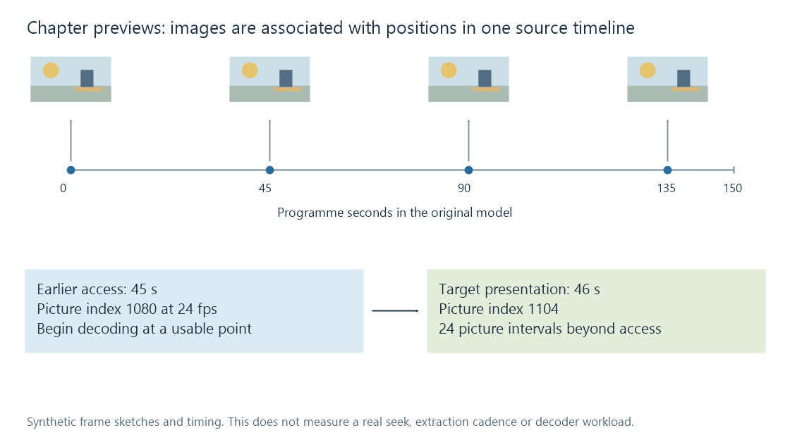

Chapter thumbnails
A chapter thumbnail associates a rendered frame preview with a programme position, requiring the selected source, time mapping and image derivative to remain coherent.
A chapter image previews a programme position. It belongs to a particular media source and timeline as well as to the library item.
This is a different relationship from the one selected episode image used for browsing.
A position needs a corresponding picture
An original programme can have chapter positions at 0, 45, 90 and 135 seconds. A derived image set associates each chosen position with a rendered picture and its image resource.

The chapter label and the image can be correct only if they refer to the same source/time mapping. Another edit of the film can change that correspondence while retaining its work title.
Seek access and target time are different
In an original constant-rate model, picture PTS is n/24. A target at 46 seconds corresponds to picture 1104.
Suppose the usable earlier seek point is at 45 seconds, picture 1080. The target lies 24 picture intervals later.
The decoder can begin at the access point and continue toward the required presentation. That does not mean the picture at the access point is already the target image.
This simple model describes timing, not measured decoder work. Real prediction, reordering and seek behavior depend on the stream and processing route.
Presentation time selects the visible result
A packet's decode order or arrival time can differ from its picture's presentation time. Packet timestamps explains those boundaries.
A frame preview should represent the selected programme position, not merely whichever decoded packet happened to be reached first. A crop or colour conversion then affects the image produced from that picture.
Regeneration follows source and recipe changes
Replacing a local file with another cut can leave old chapter previews associated with the work. The old pictures may still look plausible while referring to another timeline.
A different image recipe can also require updated derivatives. Keep selected source/version, chapter position and processing context together when comparing an Emby preview with the current video.
A small cached image is the result of this derivation; it is not itself evidence that the current video's chapter mapping was re-evaluated.